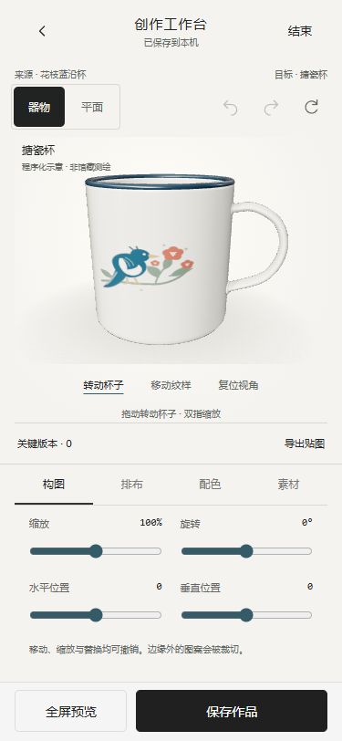

2026-10-30。基于第05轮反馈继续修改原H5。保持现有色调与导航，不创建第二套应用，不上传GitHub。
打开编辑页（需已有草稿，否则从首页开始共创）。
杯底增加圆滑过渡，细化蓝色卷口；杯柄由圆管改为椭圆扁带截面，补上上下接点。釉面高光与反射重新调整，降低过曝；添加真实自阴影、环境反射明暗控制和内腔深度明暗。主界面原暖白、石墨黑与辅助蓝保持。
这是程序化设计示意，并非对应馆藏实物的测绘模型；当前仅杯子支持直接三维编辑，未扩展其他器型。实物尺寸、授权模型与工艺仍待确认。源物件是盘、碗或盆也不意味着目标器型已经变成相同物件。
prototype/editor-object.js：器物视图、模式选择、拖动反馈、状态及草稿接口。prototype/editor-views.js、editor.css、app.js、index.html、schema.d.ts：嵌入原编辑区、保留渲染实例、实时更新、釉色、视图偏好和返回规则。source/cup-geometry.mjs、source/cup3d.js、prototype/cup3d.js：杯体和杯柄、材质灯光、自阴影、UV拾取与拖动、资源释放。tests/cup.test.cjs、scripts/qa-editor-object.cjs、scripts/qa-round04.cjs：补充杯柄颜色属性回归、直接器物交互测试；二维回归显式选择平面视图。index.html、物之再生-H5-单文件.html：本地重新构建。README.md、使用说明.txt、task_plan.md、findings.md、progress.md、docs/editor-object-*、previews/editor-object-*：当前说明、验收与截图。新交互与四视口记录 · 73项测试日志 · 语法检查 · 构建记录
测试使用Headless Edge的手机视口及触控模拟，尚未进行实体手机/iOS/微信验收。当前场景约13,186三角形、8份几何及6份纹理；静止不持续绘制。新自阴影增加少量GPU开销，低端手机仍需真机确认。

本目录PowerShell执行 $env:PORT='8879'，再 npm start。已有服务直接刷新 http://127.0.0.1:8879/prototype/index.html#editor。编辑3D源码后先执行 npm run build:cup，再 npm run build。
本次不涉及外部AI、云同步、正式馆藏、馆方积分或工厂服务接入。未部署；实体授权模型、生产参数与真机验收仍待补齐。